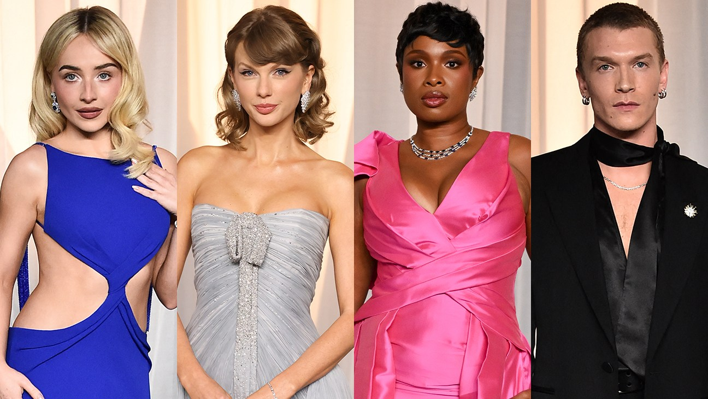
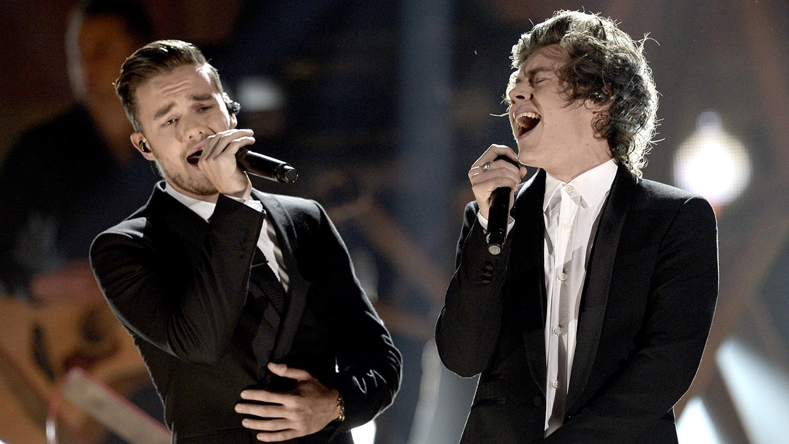
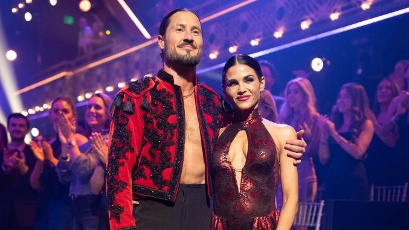
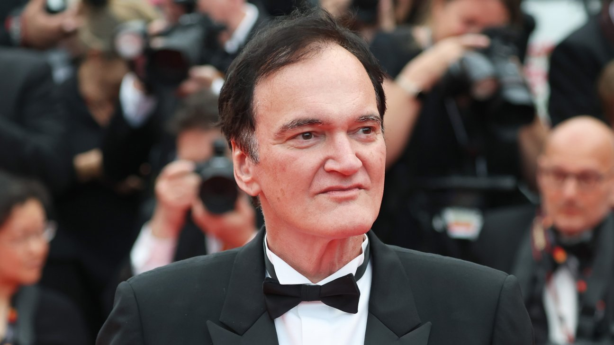

Taylor Swift closes the Academy Museum Gala with the first live “Fate of Ophelia”

Introduced by Conan O’Brien, Swift ended Saturday night’s gala in Los Angeles with a four-song set: “Blank Space,” an acoustic “The Fate of Ophelia” (which she called its first live performance), her Toy Story 5 song “I Knew It, I Knew You” and “Love Story.”
She swapped her pale-blue Dior red carpet gown for a sequined cobalt Jonathan Anderson dress for the set, as Rosé, Sabrina Carpenter and Charlize Theron sang along. The night honored Theron, Colman Domingo and John Carpenter and raised more than $14 million for the museum. It doubled as an Oscar-campaign stop for “I Knew It, I Knew You,” which is in the original song race.
 Listen on Spotify →
·
Listen on Spotify →
·
 The Hollywood Reporter (photos) →
·
InMusic (set list) →
The Hollywood Reporter (photos) →
·
InMusic (set list) →
Harry Styles plays an unreleased song for Liam Payne on the second anniversary of his death

At Friday’s stop of his 30-night Together, Together residency at Madison Square Garden, Styles introduced “What Is Enough,” an acoustic song he said he wrote for “my friend” about two years ago. “Two years ago today, I lost one of those friends,” he told the crowd. “It’s just about looking after each other.”
Fan videos spread fast, and full-length clips leaked online by Saturday. One lyric seems to reference Payne’s funeral: “I could tell you what it’s like to bury friends on a Wednesday night.” Payne died Oct. 16, 2024, at 31. The song isn’t on Spotify; his latest album, Kiss All the Time. Disco, Occasionally., is linked below. The residency runs through Oct. 31.
 Listen on Spotify →
·
Billboard →
·
Listen on Spotify →
·
Billboard →
·
 The Hollywood Reporter →
The Hollywood Reporter →
Dancing With the Stars benches Val Chmerkovskiy over a slap joke aimed at Carrie Ann Inaba

After Inaba critiqued a lift by his wife, pro Jenna Johnson, on the Oct. 13 show, Chmerkovskiy posted a since-deleted TikTok story saying “You almost saw Fresh Prince enter the ballroom last night,” a nod to Will Smith’s Oscars slap. BBC Studios said Saturday the post was “inappropriate” and that he will sit out next week’s show.
Chmerkovskiy apologized again on Instagram, saying Inaba “didn’t deserve to get caught in the middle of my bad judgment.” His partner, Jenna Dewan, will dance Dedication Night on Oct. 20 with Alan Bersten, a Viennese waltz to “Unchained Melody” dedicated to her mother.
Quentin Tarantino says his tenth and final film is written, but he’s in no rush

On The Graham Norton Show, Tarantino confirmed he has finished a script he “really likes” for the film he has long said will be his last. First he’ll stage his play The Popinjay Cavalier, a swashbuckling comedy starring Sacha Baron Cohen at London’s Phoenix Theatre from March through June 13. After that he wants to “spend time with my family and live a little.”
His last movie is still 2019’s Once Upon a Time in Hollywood. There’s no trailer for an unannounced film, so the YouTube link is his Graham Norton appearance.
Bottom of the news
- Street Fighter is tracking a $31 million opening, A24’s Elizabeth Holmes documentary You Can See Everything is heading past $12 million, and Whalefall is sinking at about $7.5 million (Deadline).
- Paul McCartney told Sam Mendes he worried Paul Mescal is “markedly shorter” than his Beatles co-stars.
- Paul Bettany says he and Johnny Depp hadn’t spoken in years when their old texts surfaced in Depp’s libel case.
- Sean Combs has been moved to a prison in Pennsylvania.
- TikTok suspended the account for Alex Gibney’s Elon Musk documentary ahead of its wide release; distributor Bleecker Street is appealing.
- East of Eden tops Netflix’s English TV chart.
- Diablo Cody says a Jennifer’s Body sequel is imminent and will make Jennifer more sympathetic.
- My Chemical Romance signed a worldwide publishing deal with Warner Chappell.